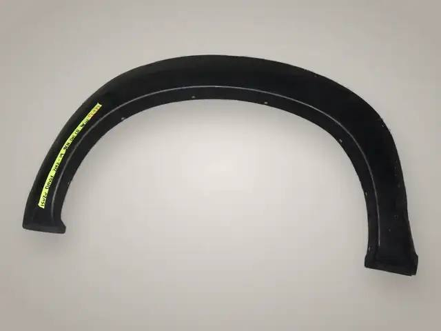
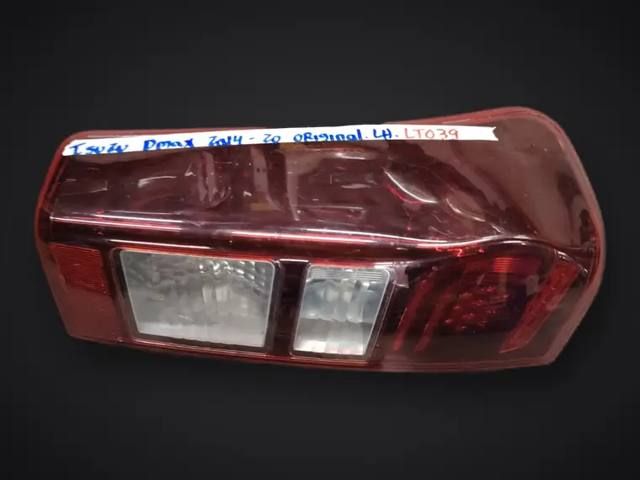

Piezas de carrocería para Isuzu D-Max
21 piezas disponibles hoy para Isuzu D-Max, cada una con su foto y su código: flares (3), molduras traseras (3), lámparas traseras (2), parrillas (2). Dinos el año de tu carro y te confirmamos si le sirve.
- Garantía de 3 días
- Foto real de cada pieza
- Efectivo, Yappy o ACH
- Lunes a sábado, 8:00 a. m. a 5:00 p. m.
Flares para Isuzu D-Max 3
 FL138Dmax2012-19 · lado derecho · genérico
FL138Dmax2012-19 · lado derecho · genérico FL137Dmax2012-19 · lado izquierdo · genérico
FL137Dmax2012-19 · lado izquierdo · genérico
FL139Dmax2012-19 · lado izquierdo · genéricoMolduras traseras para Isuzu D-Max 3
 MLT002D-Max
MLT002D-Max MLT013D-Max
MLT013D-MaxLámparas traseras para Isuzu D-Max 2
 376D-Max2023-26 · lado izquierdo · genérico
376D-Max2023-26 · lado izquierdo · genérico
LT039D-Max2014-20 · lado izquierdo · original 653D-Max
653D-Max 208D-Max
208D-Max 949D-Max
949D-Max MR030D-Max
MR030D-Max CH017D-Max
CH017D-Max